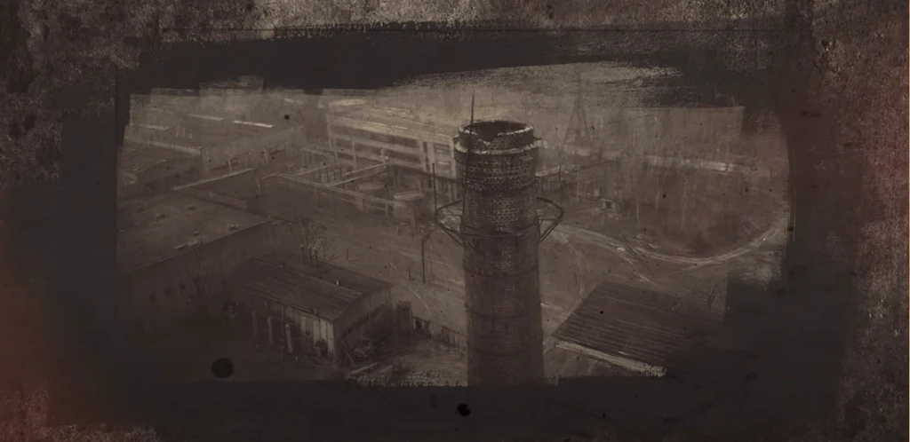
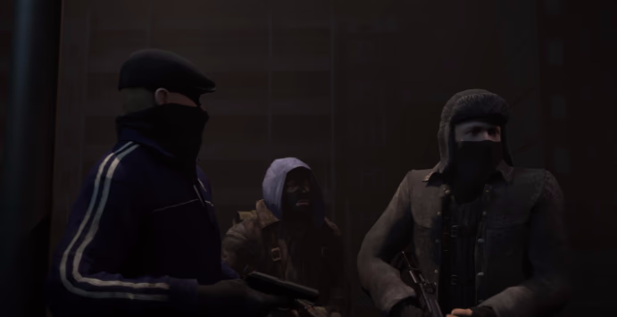
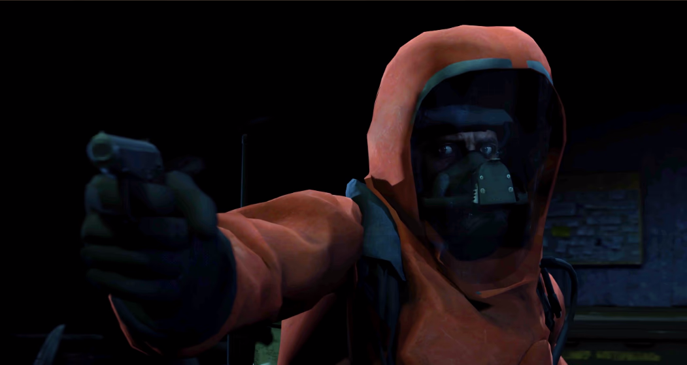
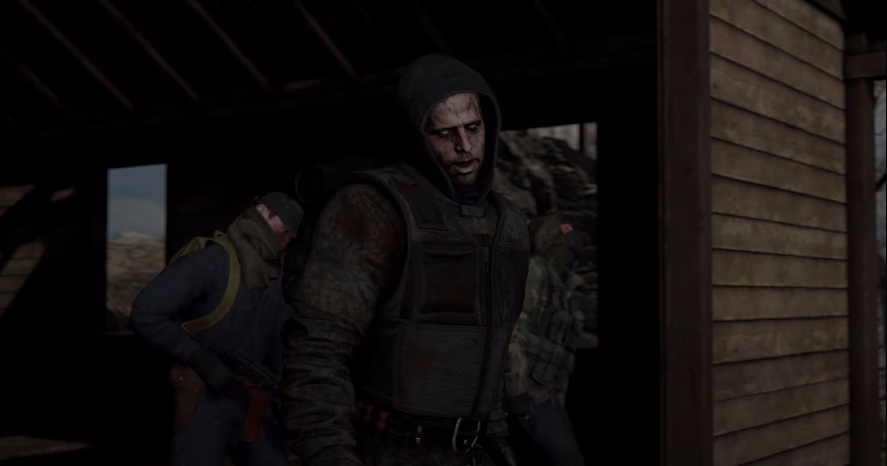
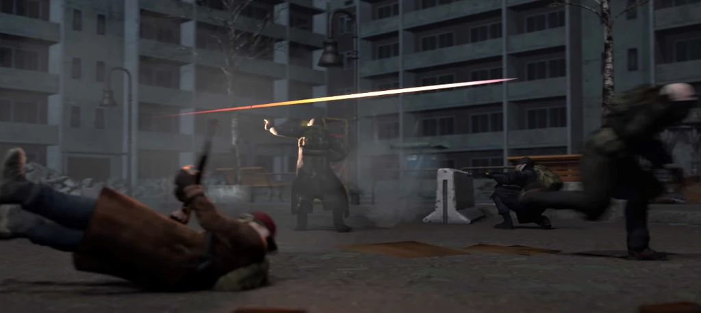
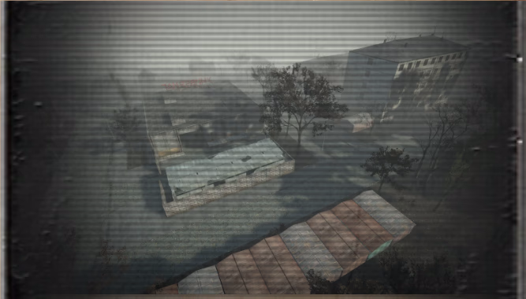
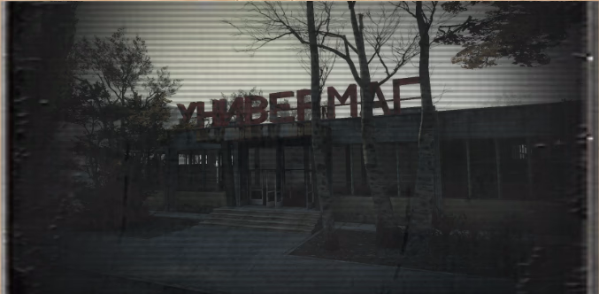
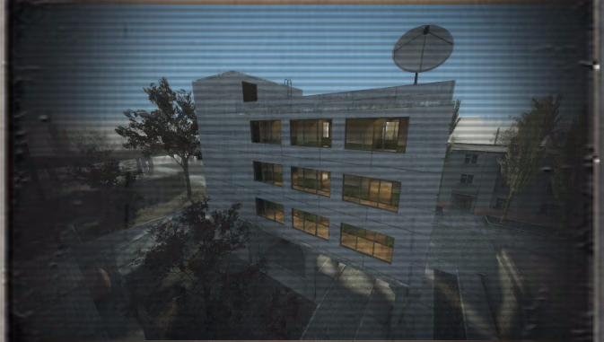
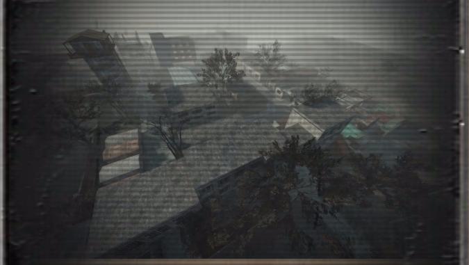

"Территория"
г.Канск
В 1992 году на химическом заводе “Луч” произошла крупная хим.авария не уничтожившая завод и как причина появления - “Территории”...

“Территория” - это буферная зона между городом Канск и заводом “Луч”. После аварии все близлежащие окрестности Канска - закрыли эвакуировав местное население, но в ту пору государство заботили крупные проблемы внутри страны, из - за чего последствие аварии были ликвидированы лишь частично, а состав охраны периметра был значительно низким, по итогу отделавшись лишь небольшими КПП по центральным дорогам в Канск и заборами с колючей проволокой.
Место, куда подобно стервятникам слетелись на запах наживы люди и нелюди со всей территории бывшего Советского союза. Большинство из которых грохнут тебя даже за самый дешевый артефакт таких называют мародёрами.

В большинстве своем это - уголовники, люди “второго сорта”. Сталкеры и мародеры вторые, рискуя своими жизнями начали изучать “Территорию”, вынося оттуда аномальные образования.
Учёные, первыми слетевшись в окрестности “Территории” как мухи на мёд, назвали те - артефактами и платили за них хорошие деньги. Точно описать все активности внутри “Территории” научным способом - не удалось, причиной стало частые провалы научных операций в сторону завода, состав которых пропадал бесследно.
После аварии большинство жителей не затронутых территорий покинуло жилые пункты, хозяйство обеднело, инфляция губило кошельки трудолюбивых граждан, Канск изменился до неузнаваемости.

Нередки были случаи смертей на “Территории” связанных с простыми биологическими потребностями. Товары на “Территорию” извне доходят до обитателей очень редко. Практически все доставляемые категории товаров ушли в дефицит, только зажиточные могут позволить купить что - то особенное из - за границ “Территории”.
Чуть позже из некоторых заброшенных деревень и колхозов начали появляется существа, напоминающие прежний скот мутировавшие до неузнаваемости, в особенности ихнего существование стало - беспричинная агрессия, ранее травоядные превращались в плотоядных.
Также было замечено странное явление, подобное можно было увидеть в населенных пунктах или местах в прошлом обхаживаемые людьми, симптомами которыми являлись: боль в голове, спазмы, усталость, а в случае подвержение долгим влиянием - идет этам потери рассудка, человек теряет контроль над собой превращаясь в - “гуманоидную опасность”, недавно превращенные не теряют примитивных комплексных рефлексов и инстинктов, также наделенные агрессией ко всему одушевленному.

Учёные назвали это - “Лучевым” эффектом, отталкиваясь от название завода “Луч” и слова - облучение. А сталкера так и прозвали подобных - “лучевыми”. Некоторые сталкера поговаривают о том, что “лучевые” имеют коллективный разум, что являлось более - менее адекватным объяснением того, что в основном они держатся отрядами, по распространенному слуху, на заводе обитает группа лиц не подвергающийся воздействию, никто не знает откуда растут “ноги” у этого слуха, ни этого человека, ни доказательств и предпосылок на это - нет.
Ученым удалось узнать некоторые подробности о “Территории”, согласно исследованиям артефакты имеют не характерные законам земли свойства что и стало основной причиной “нашествия” людей.
Наше Время
1993 г.
Конфликты между сталкерами и мародерами не прекращались.

из - за чего людские ресурсы на “Территории” истощились, остались лишь единицы выживших и без того в суровом окружение “Территории”. Группировки понимали, что смысл ускорять свою смерть в этой войне - глупо, в последствие чего они приняли соглашение о нейтралитете, хотя для некоторых мародеров это не значило покончить с грабежами, они все также собирались в локальные банды и грабили сталкеров, хоть не убивая тех без причины.
Учёные организовали в ходе небольшого финансирование правительства небольшой бункер на хуторке. “Территория” привлекла большое внимание государства, они тщательно ограничивают передачу информации какими либо способами в вне. На данный момент, достоверно людям известно только о том что произошла хим.авария на заводе “Луч” с последующей эвакуацией мирного населения из окрестностей завода.
Об артефактах и о том что происходит внутри окрестностей завода “Луч” государственные деятели умолчали, от упоминаний о заводе “Луч” в массах избавлялись.
Ученые изобрели индивидуальное устройство связи создание которых переняли сталкеры, функционал являлся прорывным для своего времени, но все что происходило на “Территории”, оставалось на “Территории”. Сейчас данное устройство используют все обитатели и в том числе госструктуры на официальной основе, мародеры в том числе получали образцы благодаря связям среди сталкеров. Прозывали устройство по разному: КПК, ПДА, ИСУ.
Место действия
Мародёры
Мародеры обитают в ПГТ - “ Заводской “, в здание продуктового универмага, подвальных складах.


Выбор был довольно очевидно простым и понятным, братве надо что - то есть? Универмаг поможет! К слову во время 1 волны эвакуации многое осталось в закромах домах, где до сих пор находят ценности: золото, украшения, различного рода аксессуары и даже оружие!
Сталкеры
Сталкеры обитают на автовокзале - “ Канская “, в здании радиоцентра.

Интересный факт - это единственная открытая радиостанция в пределах границ “Территории”. (За исключением, разве что военных). Пусть “стоянка” сталкеров не богата материально как мародерская, но здесь присутствует: хорошая связь, а также возможность отслеживать радиопереговоры, инструменты, хороший обзор и местоположение делает такой выбор далеко не глупым.

Справка
Лор писал - bostonjorge
Население Канска на момент 1992 года составляет - 1034 человека
Месяцы / дни в реальности соответствуют месяцам / дням на сервере
Нашли ошибку, какой либо недочет? Пишите - bostonjorge.
Лор будет так же дописываться в ходе глобальных событий на сервере, тесно взаимосвязанные с лором и дальнейшей истории сервера.